Lightening the load, strengthening dementia care.
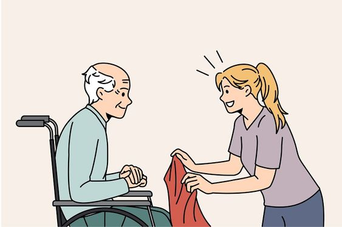
JavaScript, HTML, CSS, React Native, PHP, User Research, Questionaire, Accessibility
Group Project (Hackathon)
Front-end, Questionaire, Presenter
The Giver is a caregiving app designed to support both dementia patients and their caregivers. By synchronizing patient status and providing real-time notifications, the system helps reduce caregiver workload and alleviates challenges caused by workforce shortages. The app also includes a voice-based Q&A feature that responds to repeated patient questions using stored answers, significantly lowering the emotional stress placed on caregivers who frequently need to repeat the same information.
Background
Hackathon Prompt
Google challenged participants to design solutions using the Android Accessibility API to enhance mobile experiences for users who rely on assistive technologies. The prompt emphasized inclusive design, encouraging teams to create practical, meaningful tools that expand accessibility on Android.
Problem Insight
From this prompt, our team identified a critical issue in Taiwan’s healthcare landscape: the shortage of caregivers supporting dementia patients. With dementia diagnoses rising, caregivers face long working hours, high emotional stress, and increasing responsibility. Taiwan currently faces a workforce gap of over 8,000 caregivers, and 85% report elevated anxiety and pressure.
Design Opportunity
These challenges reveal an opportunity to build an accessible digital tool that helps caregivers monitor and support multiple dementia patients more efficiently. By leveraging the Android Accessibility API, the project aims to reduce caregiver burden while improving the quality of care for individuals with disabilities.
Target Audience
Caregivers
Caregivers in dementia care face overwhelming challenges. Due to severe workforce shortages, one caregiver is often responsible for multiple patients, resulting in heavy physical and mental workload. The nature of dementia care is emotionally demanding, patients may ask repetitive questions, experience mood instability, and require constant reassurance. Over time, these interactions can lead to caregiver fatigue, stress, and a sense of frustration or helplessness.
Patients with Dementia
Patients often struggle with memory loss, frequently forgetting daily routines such as whether they have eaten, taken medication, or performed essential tasks. They may also forget questions they have already asked, leading them to repeat the same inquiries. These symptoms not only increase the complexity of caregiving but also highlight the need for supportive tools that help patients regain a sense of autonomy and reduce unnecessary caregiver load.
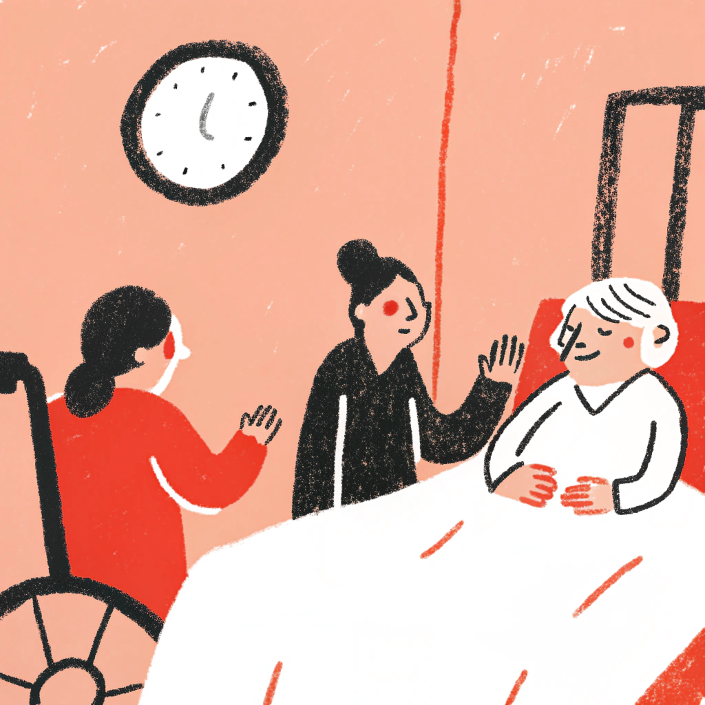
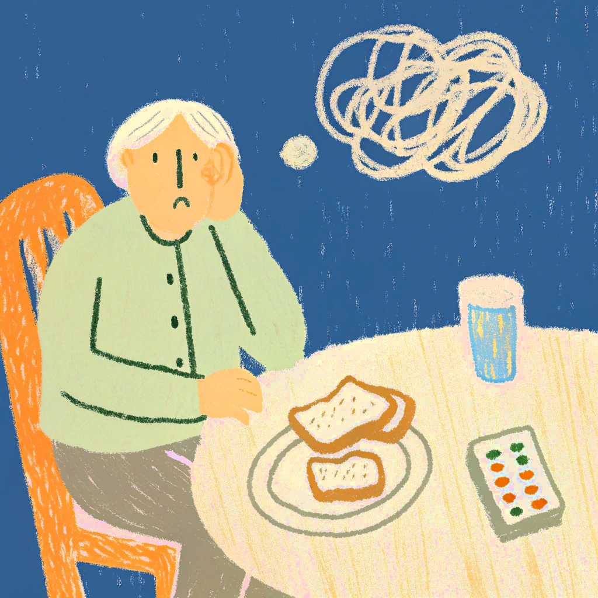
Final Prototype
Record & Monitor Daly Routine
Patient Side
Patients can easily record whether they have completed their daily routines directly on the screen. The interface uses only four large, intuitive icons, minimizing confusion and making it easy for users with memory loss to operate. Once a task is marked as “done,” the patient can immediately see the confirmation, helping prevent repeated actions or repeated questioning.
Caregiver Side
When a patient marks a task as completed, the update is instantly reflected on the caregiver’s dashboard. Caregivers can view all assigned patients in one centralized page, allowing them to monitor routines without checking individually or repeatedly asking each person. This real-time overview significantly reduces workload, improves efficiency, and supports the management of multiple dementia patients at once.
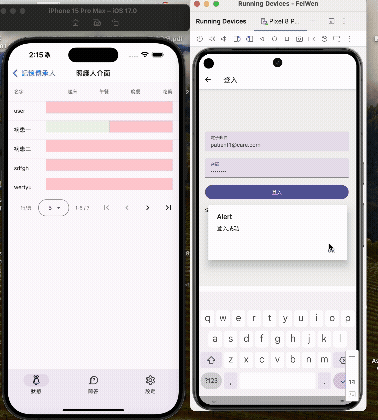
Question Asking & Answering
Patient Side
Patients can use the built-in microphone to ask questions whenever they feel uncertain or need reassurance. If the question has been asked before, the system retrieves the most similar previously answered question and plays the recorded response aloud. This helps reduce repetitive questioning, common in dementia care—and provides immediate comfort without requiring caregiver intervention. If the system cannot find a matching answer, it flags the question as new and informs the caregiver.
Caregiver Side
For unanswered questions, the caregiver receives a notification and can record a response directly within the interface. The system then automatically stores the audio reply in the database for future matching. Over time, this builds a personalized knowledge base tailored to each patient’s recurring needs and patterns, significantly reducing caregiver workload while ensuring patients receive timely, consistent answers.
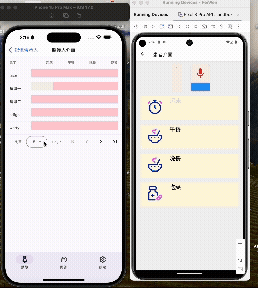
Alert System
Patient Side
A prominently placed red alert button is located at the top-right corner of the patient’s interface. Whenever the patient needs immediate assistance, they can simply press the button. The system then sends an instant notification to the caregiver, ensuring quick communication even when the patient is unable to express their needs verbally.
Caregiver Side
When any patient triggers the alert button, the caregiver receives a real-time notification indicating which patient requires help. This allows caregivers to respond promptly and manage urgent situations more efficiently, especially when overseeing multiple patients at once.
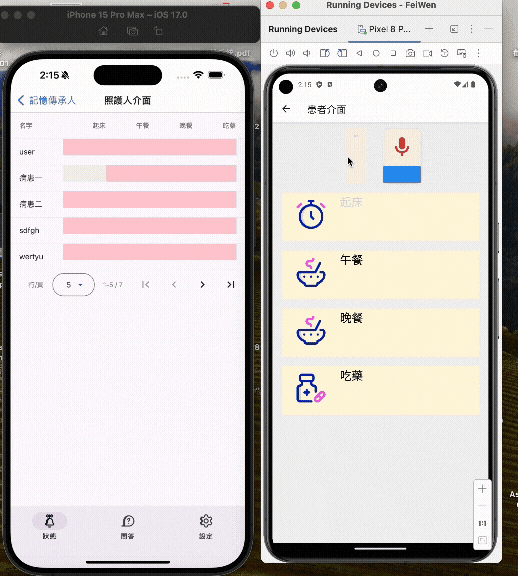
Current Market
Most caregiving apps offer basic tracking features, but they lack real-time doctor–patient or caregiver–patient connection, making it difficult to respond quickly to patient needs. Existing products also do not support voice-based Q&A, so caregivers must repeatedly answer the same questions. Additionally, many interfaces are not designed with dementia-friendly simplicity in mind. The Giver addresses these gaps by providing instant updates, a smart voice Q&A system, and a clearly labeled, accessible interface, making it a more complete and supportive solution for dementia care.
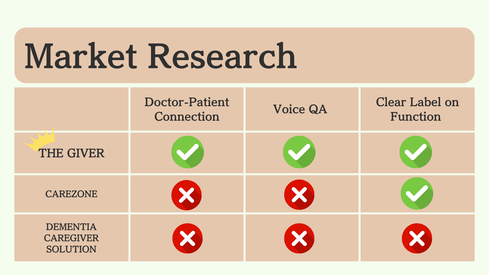
Questionairre
We distributed a questionnaire to individuals with elderly family members or relatives with dementia and collected approximately 90 responses. The survey aimed to understand the daily challenges faced by dementia patients and caregivers, as well as their expectations for potential digital support tools. The insights gathered helped us validate user needs and shape the core functions of The Giver.
Insight:
From the questionnaire results, we learned that the two most valued features for our target users are reminders for daily tasks and easy communication with family members or caregivers. Respondents also emphasized that any solution must have a simple, easy-to-use interface, as dementia patients often struggle with complex navigation or excessive information. These insights directly guided the core functions and UI design of The Giver.
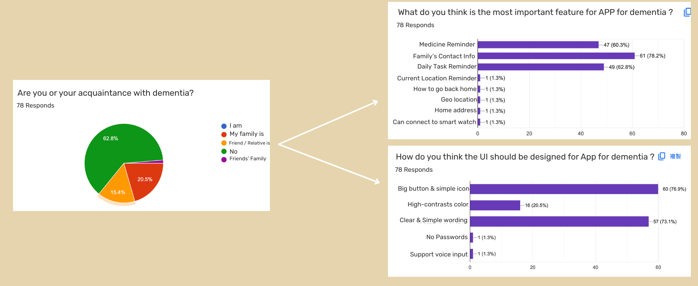
Wireframe
Patient Home Page
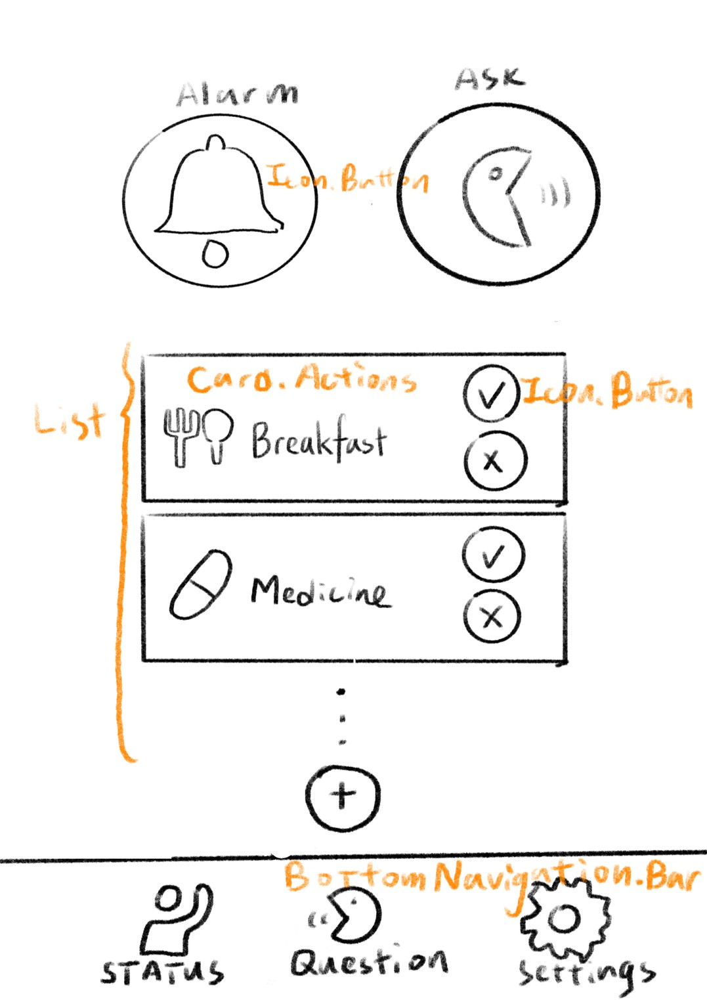
Cregiver Home Page
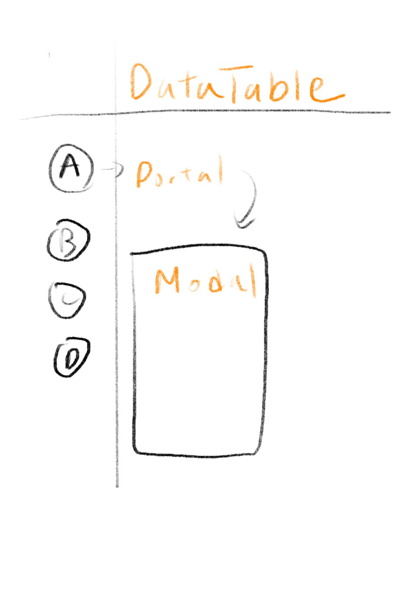
Unanswered List for Caregiver
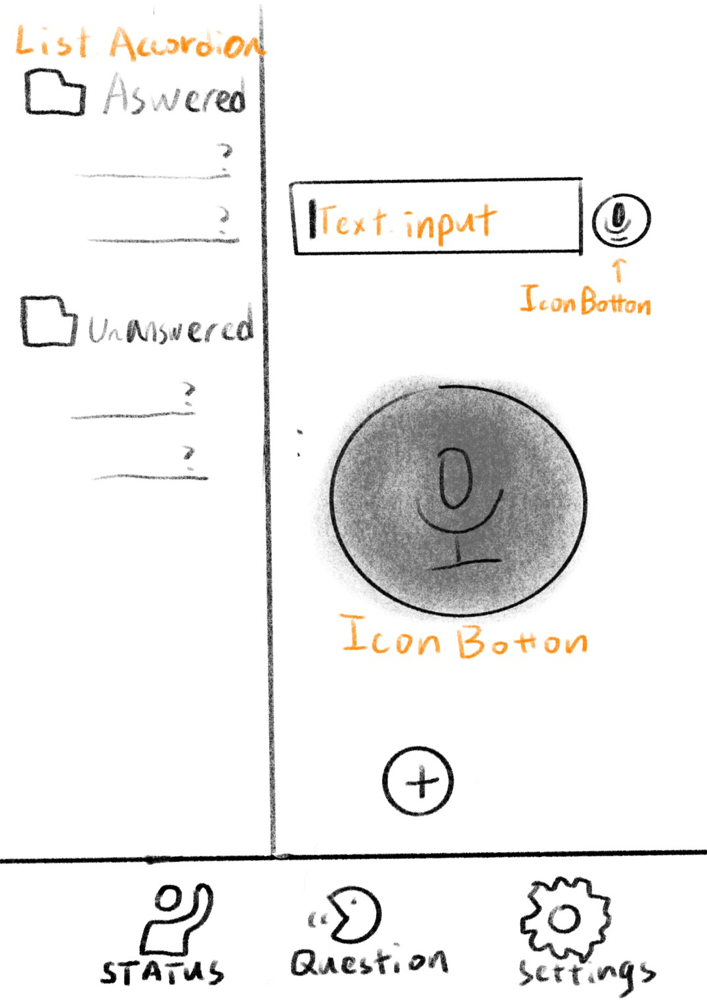
Recording Page for Caregiver
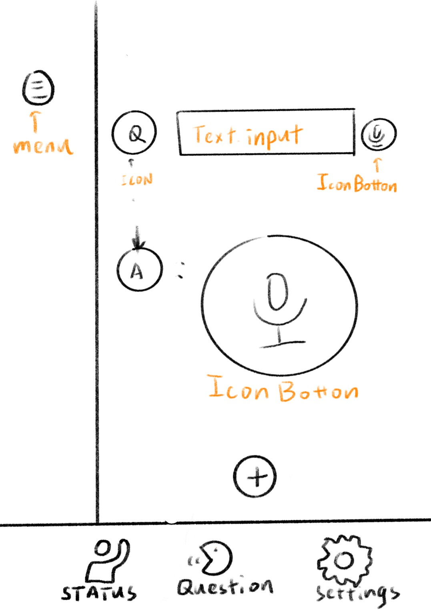
Feedback
After creating the prototype, we distributed a follow-up questionnaire to our target user group to gather feedback on usability and perceived value. Over 75% of respondents indicated they would be willing to use the app, and many also expressed that they would be illng to pay for such asolution confirming strong user demand and validating our design direction.
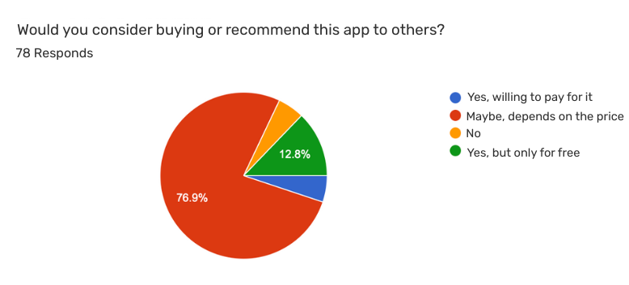
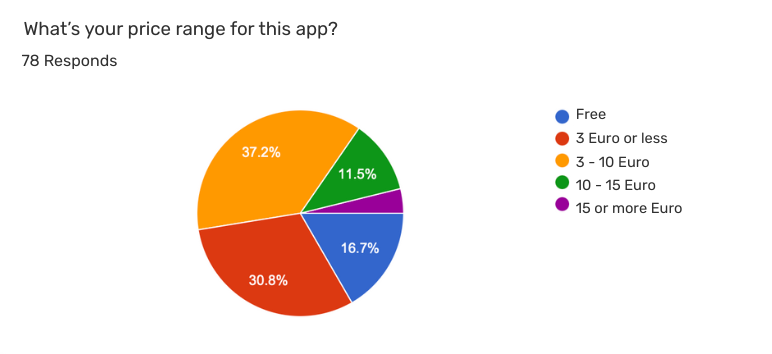
Technical Implementation
The system uses the Google Cloud Speech-to-Text API to convert patient voice queries into text, which the backend compares against entries stored in an SQL database using a similarity-matching algorithm. The backend, connected to a React Native frontend for both patient and caregiver interfaces, sends notifications when no matching answer exists, allowing caregivers to record a new response. Each new audio and text pair is then stored in the SQL database, gradually building a personalized Q&A library that reduces repetitive workload.
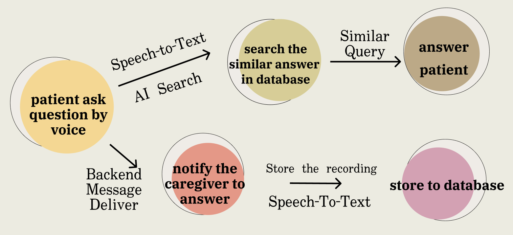
Conclusion
What I've Learned:
Through this project, I gained hands-on experience designing for accessibility and learned how to translate real caregiver and dementia patient needs into clear, usable interfaces. I also strengthened my skills in rapid prototyping, user research, and integrating frontend React Native components with backend services. Additionally, I deepened my understanding of how voice processing, similarity matching, and cloud-based APIs can support real-world caregiving workflows
Future Works:
In the future, we hope to add more features like scanning medicine label, auto add calendar.
And extend the system to more than just dementia patient but daily life relation like parent caring.